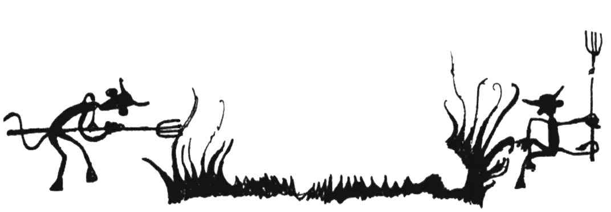

Neuroalgebraic Geometry
Neuroalgebraic Geometry brings together algebraic geometry and deep learning. The goals are:
- Using algebraic geometry to understand neural networks.
- Using deep learning to inspire fresh questions in geometry.

Algebra is the offer made by the devil to the mathematician. The devil says: ‘I will give you this powerful machine, it will answer any question you like. All you need to do is give me your soul: give up geometry and you will have this marvellous machine.’
The central objects of study are polynomial deep learning models and the spaces of functions $\M$ they parametrize, called neuromanifolds.
Why polynomials?
- They are general. By the Weierstrass approximation theorem, polynomials can approximate any continuous function locally.
- They are suitable for geometry. For polynomial models, $\M$ lives in a finite-dimensional ambient space, which happens only for polynomials. Crucially, $\M$ is a semi-algebraic variety: it can be defined by polynomial equalities and inequalities.
Geometric aspects of $\M$ can be translated into learning ones, and vice versa.
Visualize and Play
Have fun with some toy neuromanifolds!
What is this?
Consider a residual network (see Skip connections) with two layers of one neuron each, no biases, and as activation a polynomial $\sigma \in \R[t]$ of degree $r$. It computes $$ f_\theta(x) = \sigma\big(w_2 (\sigma(w_1 x) + x)\big) + \sigma(w_1 x) + x, \qquad \theta = (w_1, w_2) \in \R^2, $$ and, without its skip connections, $f_\theta(x) = \sigma(w_2\, \sigma(w_1 x))$. In both cases, $\M$ lies in the ambient space $V = \R[x]_{\le r^2} \cong \R^{r^2 + 1}$. For generic $\sigma$, as $\theta$ ranges over the disk $w_1^2 + w_2^2 \le R^2$, $f_\theta$ traces a surface in $V$.
Choose $\sigma$, and see the surface through an orthogonal projection $V \to \R^3$, for the Bombieri–Weyl inner product $\langle x^i, x^j \rangle = \delta_{ij} \binom{r^2}{i}^{-1}$: a random one, or the projection onto the top three principal components of the surface (PCA). Drag to orbit, and Shift + drag to rotate the projection through the hidden dimensions. Features of the surface itself, such as its singularities, are there in every projection; artifacts of a projection move around as it rotates. Pointing at the disk of weights marks $f_\theta$ on the surface. Clicking trains the network from $\theta$, by gradient descent on the squared Bombieri–Weyl distance $\|f_\theta - f^*\|^2$ to a target $f^*$ ◆, a random function of the network plus noise (see Learning), optionally regularized by a multiple of $\|\theta\|^2$. The path of the training is drawn on the disk and on the surface.
Loss (log–log). Dashed: lowest on the disk.